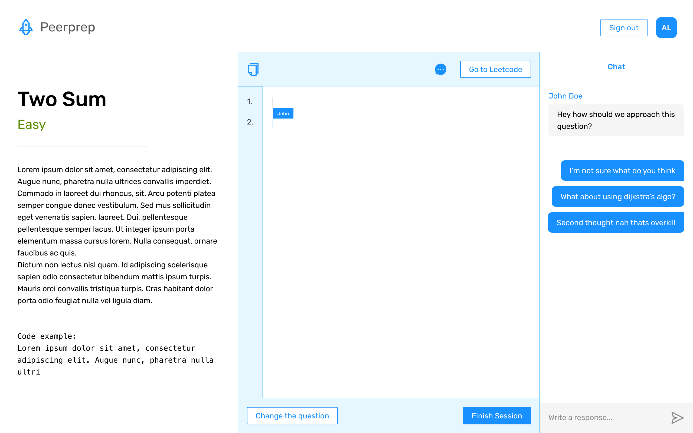

Arthur Lee
Product designer;
Get in touch!
For the module CS3219, we had to work on a software project in a team of 4 members. We could use any tech stack we wanted as long as we completed the project within the semester's time frame. We also could choose to either adapt an existing project called Peerprep or build anything we wanted. However, we had a lack of ideas that was sufficiently complex on what we wanted to build, so we decided to adapt Peerprep.
Peerprep in its previous incarnation was a collaborative text editor, matching students to practice for code interviews. We aimed to differentiate ourselves by having a strong focus on usability. This means having features that close the loop in the user flow. Specifically, after discussing a specific Leetcode question with your teammate, the natural action would be to try it out on Leetcode itself. Therefore we introduced features such as copying the text editor code and a button that links to the specific Leetcode question. This facilitates copying the code discussed and trying it out on the Leetcode question itself. Our focus on usability also led to an emphasis on having clear confirmation and recovery actions for the user.
Our overall process followed a waterfall approach, involving:
We decided to sketch out the key user flow for the application, which includes authentication to matching of users and finally to real time collaboration on the text editor.
Sketches for the full flow can be seen below, sticky notes were comments given by fellow teammates.
We also planned out how to store our data, with realtime text editor data being store on Firebase realtime database and other more persistent data such as questions scraped from Leetcode being stored on Firestore.
After agreeing on the rough user flow as per the sketches, the next step was to make a Figma mock for frontend reference during implementation. My teammate Chester and I were going to be the primary team members working on the frontend and thus we agreed on a design system that has a UI library on React we can build off from. This would ensure parity between the components used on Figma as well as those used on React itself. We decided on using antd as it was relatively well supported and design wise looks quite neutral as compared to something like Material UI. Key screenshots of the Figma mock can be seen below.
The student would encounter the landing page, prompting them to sign up with facebook or google, and subsequently choose their question difficulty. Students will be matched based on question difficulty with a timeout that returns them to select their question difficulty if no matches are found.
After getting matched they are greeted with the question details on the left, a collaborative text editor and and option to open the chat on the right.
Based on the figma mock made, we had a meeting to make some adjustments and start creating functional requirements to fulfil during implementation. After approving our project with the teaching team, development was broken down into 5 week-long sprints from weeks 7 to 11. We also provisioned a one week buffer in week 12.
During implementation, I was personally assigned the following tasks:
These tasks were spread out over the 5 weeks with my teammates reviewing my pull requests and vice versa. My teammates worked on the functionalities for the project be it frontend or backend.
Our key features for the application are as such:
We also had specific features that set us apart:
From a designer's perspective, I was particularly pleased that we were able to match up the design system to the UI library itself, allowing us to implement our design pretty much exactly as intended.
Overall, I think we did a good job with the project and this is due to the great and balanced team we had. Special thanks to my teammates Azeem, Ivan and Chester who were all very talented CS students and a pleasure to work with.
Feel free to take a look at our presentation slides below that details more heavily about the specific development processes on the backend and devOps side of the project.